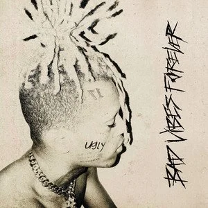
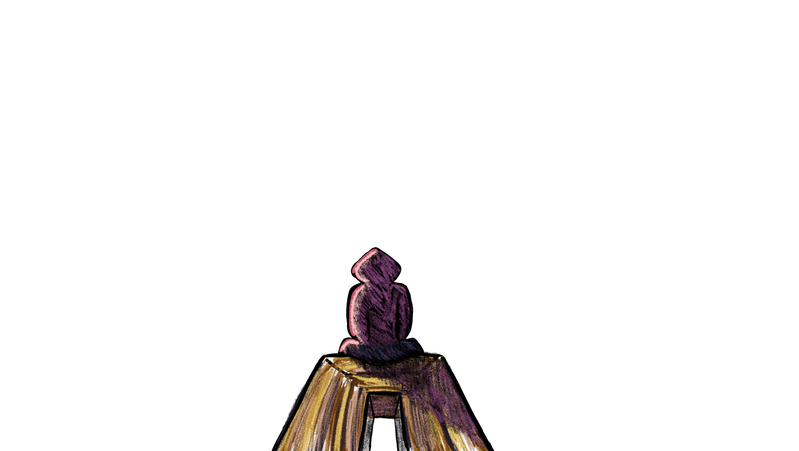
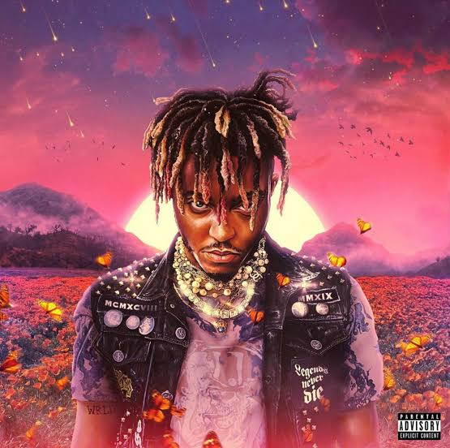
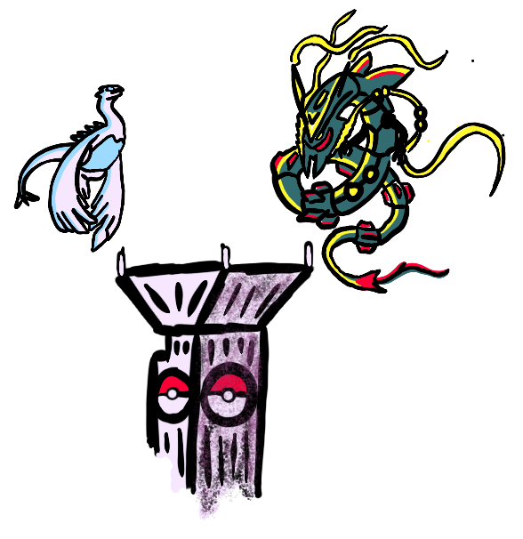

XXXTENTACION
Jahseh Onfroy also know as XXXTENTACION was an American rapper who died
in 2018 after being shot in his car. This is a little memorial for him.
my favorite songs:


Jahseh Onfroy also know as XXXTENTACION was an American rapper who died
in 2018 after being shot in his car. This is a little memorial for him.
my favorite songs:

Jarad Anthony Higgins also known as Juice WRLD was an American rapper
who died at age 21 due to an accidental overdose. This is a little
memorial for him.
my favorite songs:

This vikingship represents my love for norse mythology mostly due to the god of war game series which I love.
I really like the soundtrack too, so I recommend you to check it out.
